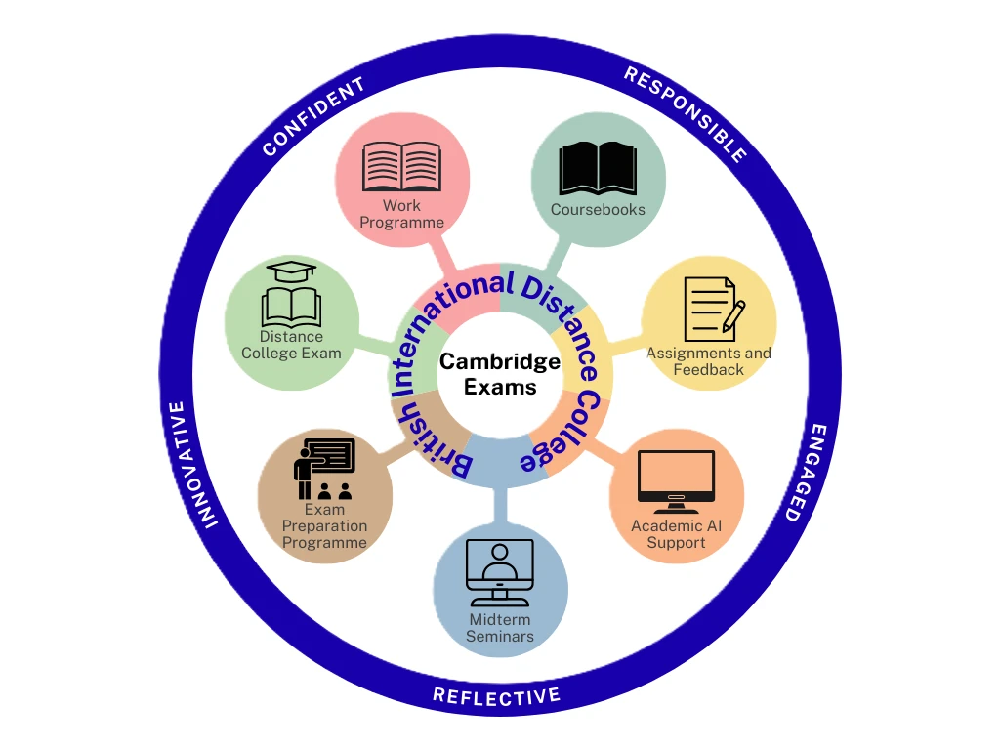

Home chevron_right Distance College
About British International Distance College
Founded in 2001 for ambitious students who need a different approach to learning: flexible, independent and fully supported.
Our story
British International Distance College was founded in 2001 to support ambitious students who need a different approach to learning. Rather than the rigidity of traditional schooling, our courses give students autonomy, with clear guidelines and flexible learning.
Our offices are at the BIC Bryanston campus, where a team of highly qualified tutors works with our administration staff to support each student’s learning and education journey. BIDC is a registered Cambridge exam centre (ZA557), so our students write their Cambridge exams with the same exam-centre support as our campus students.
We are the only college of its kind in South Africa, offering such a flexible pathway and such a variety of specialisation in the Cambridge curriculum.
- 2001Supporting independent learners since
- ZA557Registered Cambridge exam centre
- 1 OctoberStart of the BIDC academic year
What is distance learning?
Distance learning is often confused with online learning. Both use technology, but distance learning is structured differently, and technology supports the learning rather than replacing it.
| BIDC distance learning | Typical online schooling | |
|---|---|---|
| Pace | Your own pace, as quickly or as methodically as you wish | A set online schedule |
| Deadlines | Few fixed deadlines, with recommended submission dates to help you plan | Fixed deadlines throughout |
| Technology | A supporting resource: printed course material, plus online support; internet access is not always required | Relies entirely on online access |
| Support | Online tutors, subject specialists on request and a Student Advisor until you complete your studies | Scheduled live lessons |
How we support you
Independent study never means studying alone.
Online tutors
Access to tutors through an online platform, to help with concepts that are more complex.
Subject specialists
Additional guidance from our subject specialists, whenever you ask for it.
Student Advisors
Academic consultations from before you register until you complete your studies with BIDC.
Online Student Services
Supporting material and administration online through OSS, whenever it suits you.
Independence by design
Distance learning develops independence: students engage with resources in their own way and learn to manage their own time. BIDC builds a supportive framework around this, with recommended submission dates that help students set their own deadlines.
Because there are few fixed deadlines, students who register later in the year have the same academic opportunities as their peers. Registration opens on 1 October and continues until the end of July.
We help each student shape their own path. Rather than moulding students to think the same way, we aim to develop the next generation of leaders, creators and independent thinkers, with the autonomy and self-management that universities value and many first-year students struggle to develop.
- Self-management
- Personal responsibility
- Independent thinking
- Critical thinking
- Confidence
- Resilience
A complete science journey
BIDC offers a complete science journey from Foundation to AS Level. Our premium science courses cover all branches of science at every level, so students can complete all their school sciences with BIDC and earn four Cambridge qualifications.*
Foundation | IGCSE 01 (Core) | IGCSE 02 (Extended) | AS Level |
Checkpoint Combined Science | IGCSE Combined Science | IGCSE Coordinated Science (Double Award) | Biology Chemistry Physics |
* Dependent on course registration and Cambridge exam entry.
Students register for a complete BIDC course, with many avenues of academic support and supporting Cambridge material that gives them more control over their studies.

Start your BIDC journey
Register online any time from 1 October to the end of July. Prefer to talk first? No classes are held on site, but you are welcome to visit our offices at the Bryanston campus: book an appointment with a Student Advisor on +27 11 706-7775.